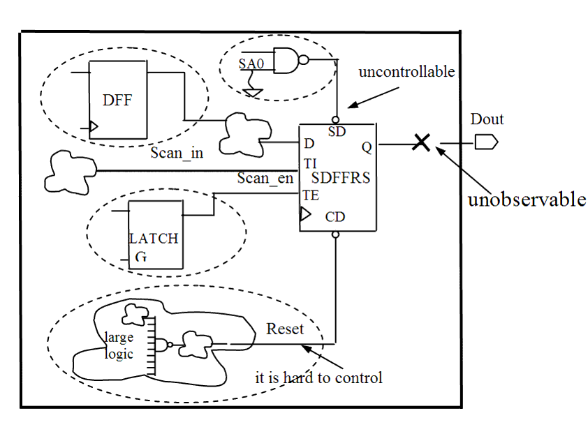

| Description | This rule fires when Leda detects flip-flops that are not active in test mode during design for test (DFT). In test mode, all flip-flops should be activated with scan enable signals to test the design circuit. |
| Policy | DESIGN |
| Ruleset | STRUCTURE |
| Language | VHDL/Verilog |
| Type | Hardware |
| Severity | Error |
This is an example of invalid Verilog code, followed by a circuit diagram that illustrates the problem:
module ntl_str52_top ; // see schematic ... wire net_01, net_02, net_03, net_04; ... // DFF - flip-flop without scan DFF I0(.D(net_01), .CP(Clock), .Q(net_02)); // DFF cell is not active in test mode (DFT) //SDFFRS - Scan flip-flop with Set and Reset SDFFRS I1 (.D(net_03), .CP(Clock), .CD(Reset), .TI(Scan_in), .TE(Test_en), .SD(Set), .Q(net_04)); // NTL_STR52 fires -- net_03|Test_en|Reset|Set |CP- uncontrollable, // net_04 - unobservable -> inactive in test mode ... endmodule